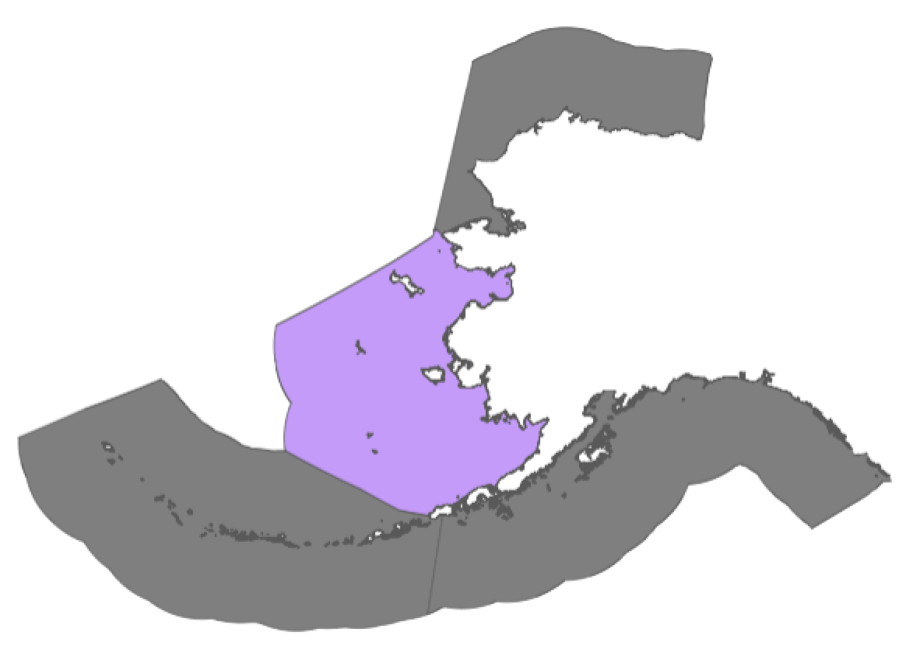

Sea ice extent in Eastern Bering
Sea ice extent summary

The sea ice extent is derived from the sea ice concentration remote sensing data. The sea ice extent is calculated as the total area, measured in square kilometers (km2), where each grid cell exhibits a sea ice concentration of 15% or more.
The time series plot and data summary below span from 1985 to the lastest available data of Eastern Bering. The labels (column names) used includes:
- “Current Year” (e.g. 2023): The year of the most recent data available.
- “Previous Year” (e.g. 2022): The year immediately preceding the Current Year.
- “Past” (e.g. 1985 - 2021): The years ranging from 1985 up to, but not including, the Previous Year.
The Alaska region is made up of distinct large marine ecosystems across: the Gulf of Alaska (GOA), Aleutian Islands (AI), eastern Bering Sea (EBS), northern Bering Sea, and Chukchi Sea and Beaufort Seas (referred to here as the Alaskan Arctic). Fishery management areas include the Gulf of Alaska and Bering Sea/Aleutian Islands. No federal fisheries currently occur in the Alaskan Arctic.
| Month | Past (Min) | Past (Max) | Past (Mean) | 2022 | 2023 |
|---|---|---|---|---|---|
| Jan | 0.11 | 0.55 | 0.301111111 | 0.39 | 0.30 |
| Feb | 0.11 | 0.54 | 0.370000000 | 0.44 | 0.35 |
| Mar | 0.06 | 0.64 | 0.395277778 | 0.37 | 0.33 |
| Apr | 0.03 | 0.58 | 0.319722222 | 0.24 | 0.31 |
| May | 0.00 | 0.26 | 0.104166667 | 0.02 | 0.13 |
| Jun | 0.00 | 0.03 | 0.003611111 | 0.00 | 0.00 |
| Jul | 0.00 | 0.00 | 0.000000000 | 0.00 | 0.00 |
| Aug | 0.00 | 0.00 | 0.000000000 | 0.00 | 0.00 |
| Sep | 0.00 | 0.00 | 0.000000000 | 0.00 | 0.00 |
| Oct | 0.00 | 0.00 | 0.000000000 | 0.00 | NA |
| Nov | 0.00 | 0.10 | 0.030000000 | 0.01 | NA |
| Dec | 0.00 | 0.35 | 0.153888889 | 0.09 | NA |
Sea ice concentration data
The sea ice extent is calculated using remote sensing data on sea ice concentration from NOAA/NSIDC, made available by PolarWatch. There are two versions of this data: near-real-time and science quality. For the purposes of this data summary, the science quality data were utilized, which are subject to approximately a three-month delay due to quality control processes.
Sea Ice Concentration, NOAA/NSIDC Climate Data Record V4, Northern Hemisphere, 25km, Science Quality, 1978-Present, Monthly
Data resources
The complete time series data from 1978 to present and sample codes in R and Python can be accessed at PolarWatch
For data assistance, please contact polar.watch@noaa.gov